Within finance, a prominent problem is the pricing of options. Empirically validated models such as Black-Scholes tell us that if you know the volatility of a stock, then the model allows you to correctly price an option on that stock. This makes volatility prediction a significant question in finance, so the core question our project seeks to answer is that of volatility prediction. In contrast to stock prices, stock volatility is more predictable (Brownlees 2011), making this a feasible project.
Volatility of a stock at time t is defined as:
St is the stock price at time t.
\[r_{t_1,t_2} = \log({\frac{S_{t_2}}{S_{t_1}}})\]
\[\sigma = \sqrt{\Sigma_tr^2_{t-1,t}} \]
A common approach to volatility forecasting is to use time-series models like GARCH (Engle 2007). The goal of this project is to explore the use of machine learning methods as an alternative. The Kaggle’s Optiver Realized Volatility Competition dataset contains roughly 6 months of historical time-series data at 1-second increments, consisting of 126 different stocks with 13 features for each stock at each time step (full data description in appendix). We propose a machine learning approach combining unsupervised and supervised models to predict volatility 10 minutes out, based on the preceding 10 minute window of time-series data.
We downloaded the Kaggle’s Optiver Realized Volatility Competition dataset on website: https://www.kaggle.com/competitions/optiver-realized-volatility-prediction/data
The dataset contains roughly 6 months of historical time-series data at 1-second increments, consisting of 126 different stocks with 13 features for each stock at each time step. It offers detailed stock market data, including order book snapshots and executed trades with a high resolution of one second. It offers detailed stock market data, including order book snapshots and executed trades with a high resolution of one second.
Exploring financial data is crucial due to its inherent complexity (please refer to the full data description and stock trading terminologies in the appendix). The dataset comprises three distinct components: book data, trade data, and a test set. These components are stored in the files book_train.parquet, trade_train.parquet, and train_csv. The dataset provides comprehensive stock market information, encompassing order book snapshots and executed trades, with a high resolution of one second. At this stage, we have selected stock 0 for analysis.
This parquet file provides order book data on the most competitive buy and sell orders entered into the market.
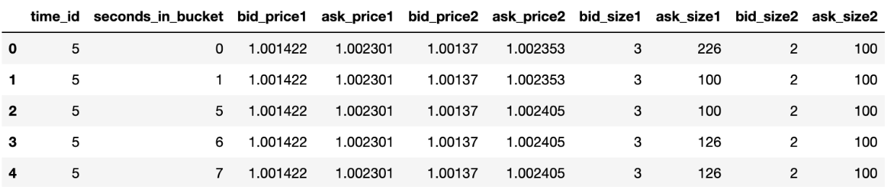
The dataframe consists of 8 features, once the time_id and seconds_in_bucket are specified. It is important to note that seconds_in_bucket 0 is always present, while the presence of other time values may vary. In fact, for each bucket, at least one second other than 0 is missing. However, every second from 0 to 599 is present in at least one bucket.
Upon examining the plot below, which focuses on the first bid and ask prices, we observe fluctuations within the same bucket over time.
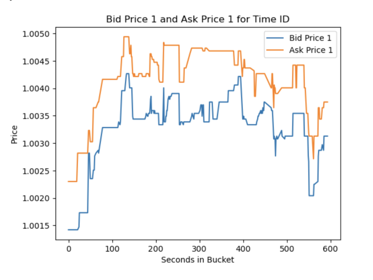
This parquet file contains data associated with executed trades.
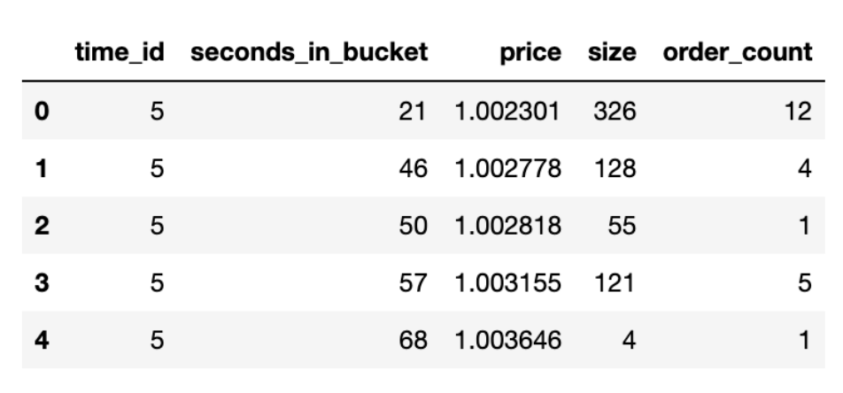
The plot displayed below illustrates the variations in price, size, and order count over time. It is evident that price and order count remain relatively stable, whereas size exhibits significant volatility.
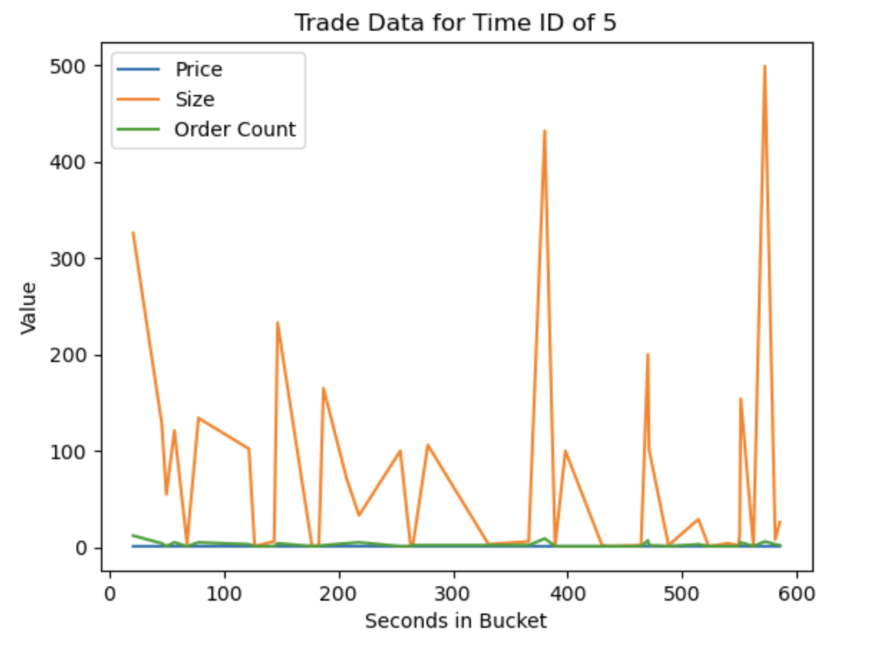
This csv file contains the ground truth values for the book and trade data (see appendix for full information).
As we mentioned above, the original data is not consistent. To make sure the constructed features in later processes have the same dimension so that we can perform dimensional reduction. We choose to forward-fill the data because we’re working on a time series prediction problem and it's more reasonable to fill the value of the next time step with the value of the previous time step.
Another important feature in volatility prediction is the intrinsic value. The order book is one of the primary sources for stock valuation. A fair book-based valuation must take two factors into account: the level and the size of orders. So we used weighted averaged price, or WAP, to calculate the instantaneous intrinsic value and calculate realized volatility.
The formula of WAP can be written as below, which takes the top level price and volume information into account:
\[ WAP = \dfrac{BidPrice_1 * AskPrice_1 + AskPrice_1 * BidPrice_1}{BidSize_1 + AskSize_1} \]
As we can see, if two books have both bid and ask offers on the same price level respectively, the one with more offers in place will generate a lower stock valuation, as there are more intended seller in the book, and more seller implies a fact of more supply on the market resulting in a lower stock valuation.
Note that in most cases, during the continuous trading hours, an order book should not have the scenario when bid order is higher than the offer, or ask, order. In another word, most likely, the bid and ask should never be in cross.
An important feature will be the realized volatility over the 10 minute window. Recall the equation of volatility at time t:
St is the stock price at time t.
\[r_{t_1,t_2} = \log({\frac{S_{t_2}}{S_{t_1}}})\]
\[\sigma = \sqrt{\Sigma_tr^2_{t-1,t}} \]
Plug in the WAP at time t as the stock price at the time, we can get the realized volatility
After the data processing, we can get a continuous full book data frame with 12 features:
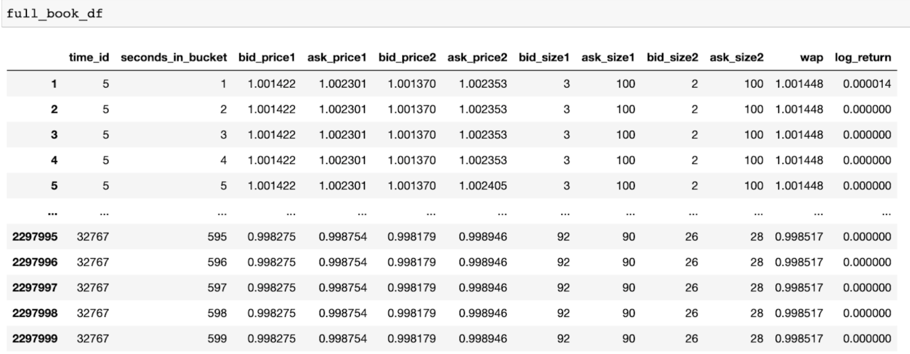
We also plotted the stock log return pre forward-filling and post forward-filling. Below are the data visualization for pre and post forward-filling:
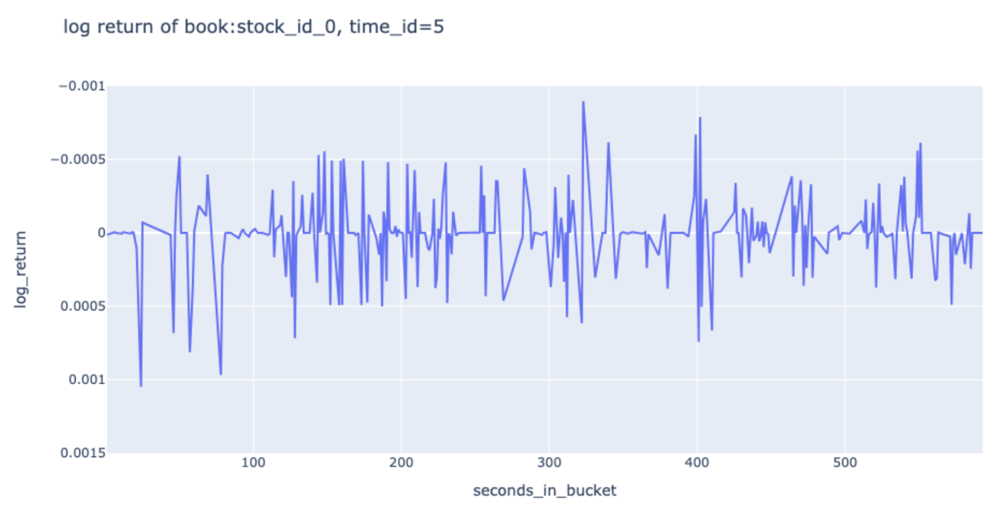
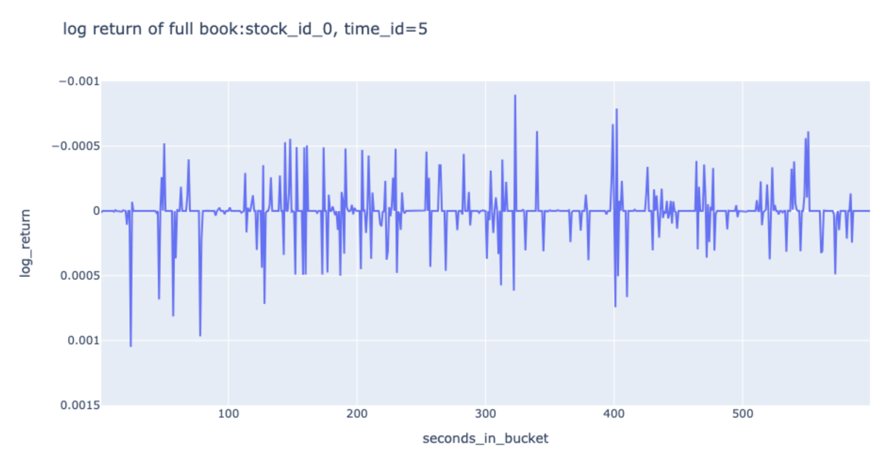
To effectively capture patterns in time-series data, it is necessary to consider variations occurring at different time points. One approach to achieve this is by performing the Fourier transform on each feature, which transforms the data from the time domain to the frequency domain. This transformation allows the model to search for patterns independently of their occurrence time, enabling it to identify patterns irrespective of when they occurred. This is particularly suitable for a volatility prediction model, as it focuses on the presence or absence of events rather than their exact timing. By applying PCA to the Fourier-transformed data, we can reduce its dimensionality while preserving its temporal invariance.
Once we obtain the Fourier-PCA features, we will utilize a Gaussian Mixture Model to generate additional features from the market microstructure data. Subsequently, we will leverage random forests to process these features and forecast volatility, taking into account the time-series nature of the data.
The main purpose of dimension reduction in our project is creating new features for volatility prediction, so we choose PCA here.
After data processing, we have the full book data frame with 10 features from book data and actual trade data and 2 features we calculated earlier(stock log returns, weighted averaged price)
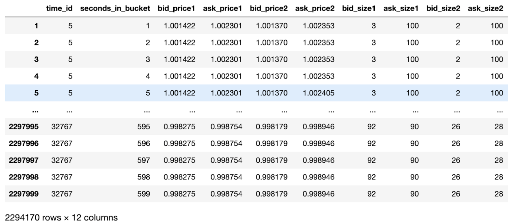
We dropped the time_id and seconds_in_bucket features(because they’re irrelevant in Fourier transform) and converted it to a three dimensional tensor: book tensor (3830*599*10). After applying the Fourier transform to book tensor, we obtained a 3830*599*20 fourier series including the real and imaginary parts. To avoid leaking data from the validation set, we normalized and divided this series into training and testing sets.
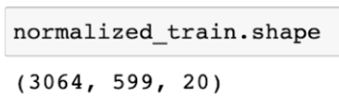
Our data is ready for PCA now, and we can check the size of our normalized training set and it’s the first 80% of the fourier series.
To obtain the useful components, we used the PCA function in sklearn and set the number of components as 10 (10 was selected by elbow method). If this runs out of memory, we can switch to incremental PCA.
Due to the noisy nature of high-frequency financial data, the PCA variance is below 50%, so instead of only using features obtained by PCA, we will merge it to the existing dataframe of features. By doing so we get a new 2 dimensional dataframe: features_df (3830*27)
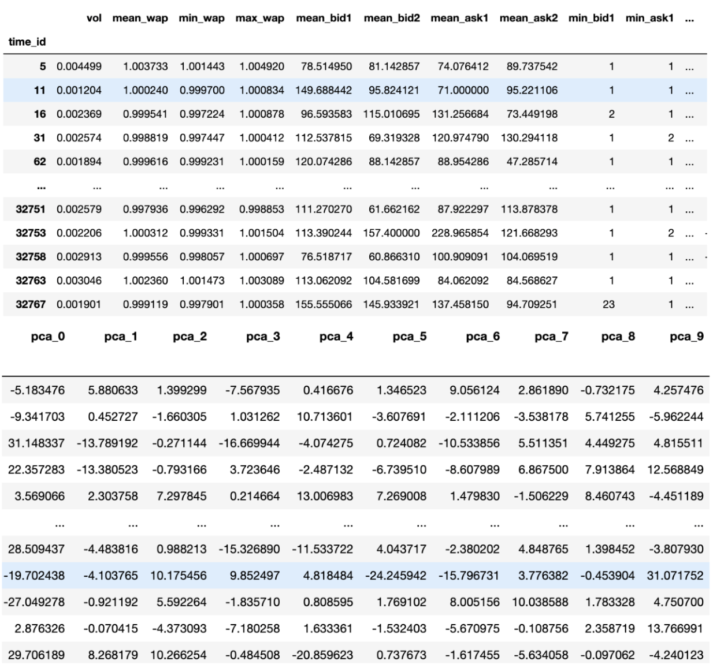
We also implemented the GMM model to construct some features with possibilities. Firstly we’ll split the features_df into training and test sets like what we did for PCA. To find the optimal components number, we iterated from 1 to 10 and selected the one with the smallest Bayesian information criterion(BIC).
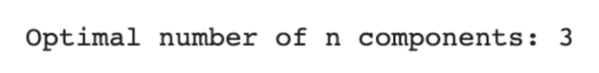
We can check how much variance is explained by each component by drawing the plots below.
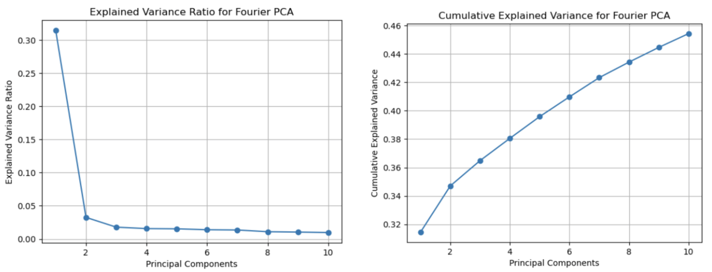
From the first picture we can tell the first Fourier PCA component can explain approximately 32.5% of variance and the top 10 components achieved a variance explanation ratio of 45.5% in total, which is a fairly good result for complicated financial market microstructure.
To conduct the correlation between Fourier PCA features, we can draw PCA scatter plots. Below is the scatter plot of component 1 and component 2 and they are not linearly correlated.
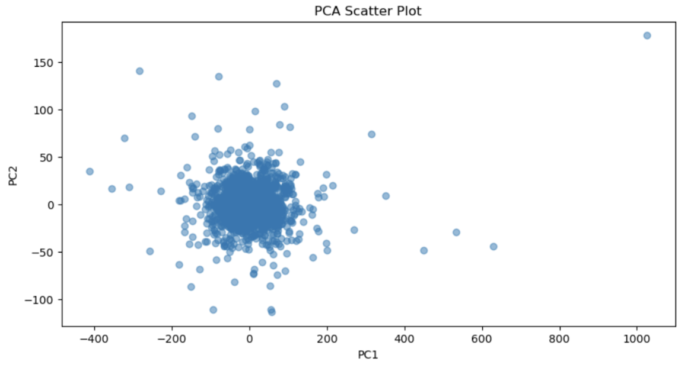
We visualized the GMM model by creating the BIC score plot and we can see selecting 3 components is the optimal choice.
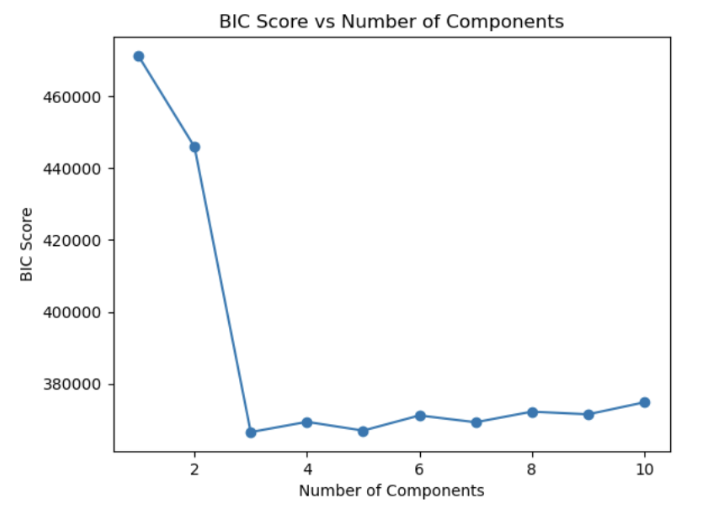
We used the RandomForestRegressor class from sklearn.ensemble module to initialize the random forest model. To find the best hyperparameter, we used the GridSearchCV class from sklearn.model_selection module. This class performs an exhaustive search over the specified parameter values for an estimator.
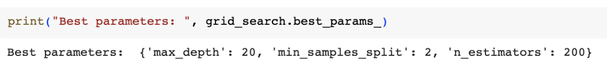
The results of the random forest are:
RMSE:
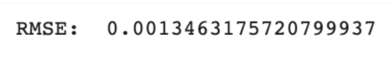
MAE:
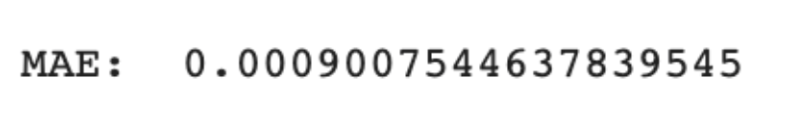
R-squared:
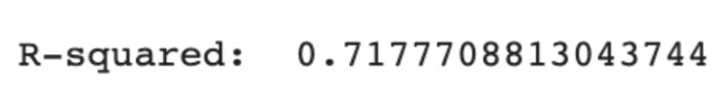
We also plotted the frequency of prediction error using Random forest
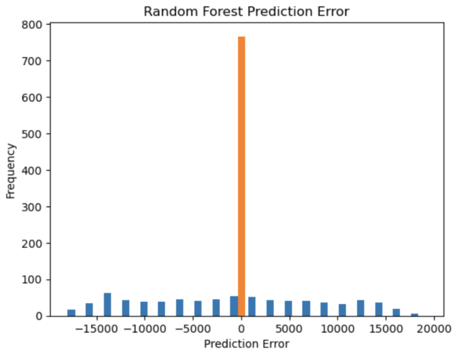
Overall, the error is small and we obtained a satisfactory result.
Since we have time series data, we can also use a 1-dimensional convolutional neural network to attempt to predict the volatility. We used 5 stages of convolution, ReLU, max pool, followed by flattening and 3 fully connected layers. See the diagram below for a more detailed specification of the model architecture.
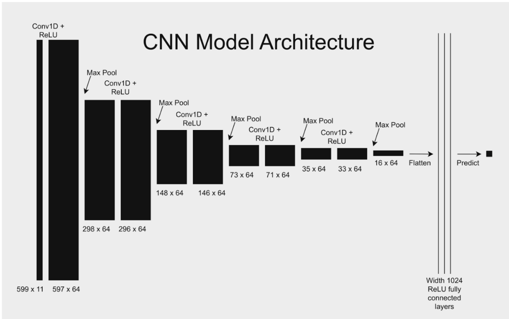
To prevent overfitting, we used L2 regularization (also called weight decay) with the Adam optimizer. To tune the model, 25% of the training data was withheld to be used as a validation dataset. Based on this validation dataset, we selected the model with the lowest validation error. From the training curve below, which plots log loss vs epochs for both the training and validation datasets, we see that there does not appear to be significant overfitting.
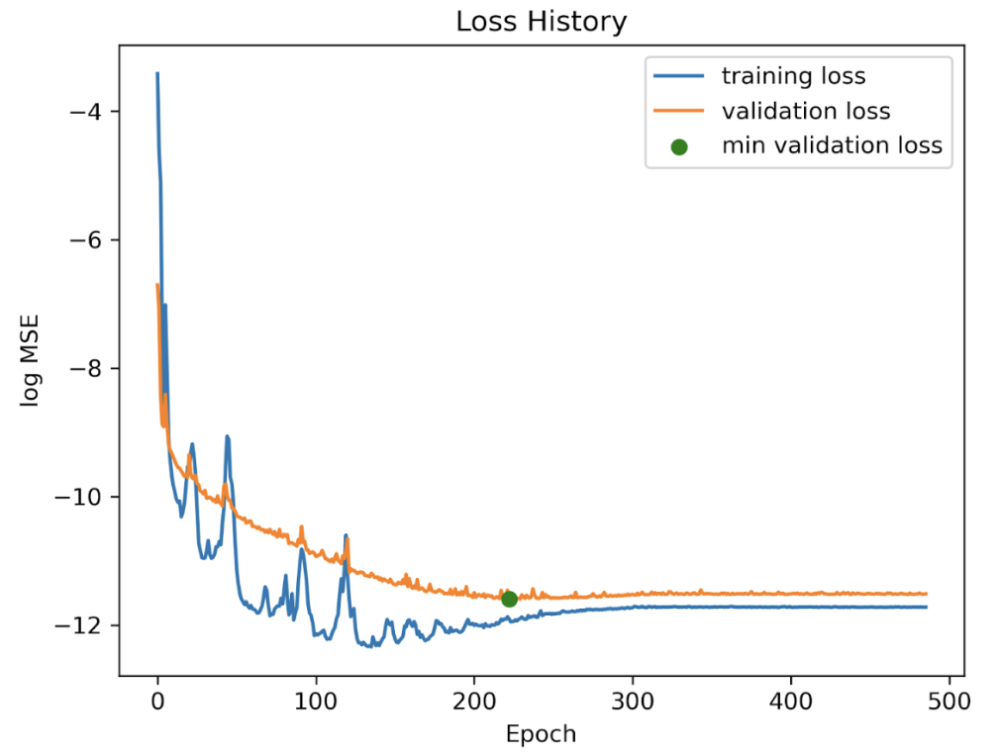
The model with the lowest loss achieved a root mean square error (RMSE) of 0.00253, which is significantly worse than the other models. More significantly, it only has a r-squared value of -0.000137. It is possible that there is not enough training data to take full advantage of the expressivity of a neural network approach.
Another model that we are using to test our data to compare with other models are ridge regression. First, using Grid Search CV to find the best Alpha, we were using each of our features as our training data, test it on target testing data and compute for R2 and RMSE. The following is the table with every features and their corresponding ststiscal analysis (sorting based on R2 value):
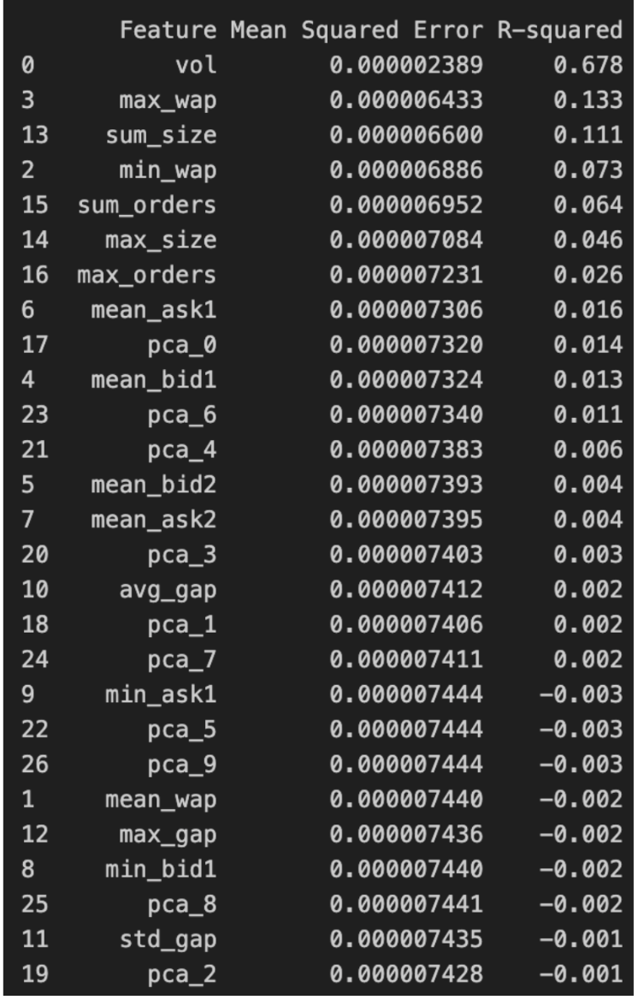
The feature with the highest R-squared value is volatility. With a R-squared value of 0.678 which is closest to 1 out of all other features. Other features with r-squared value that are closer to 0 suggests that the model does not perform better than just a simple mean of the target values. The following picture is the scatter plot of training, testing data and the ridge regression line:
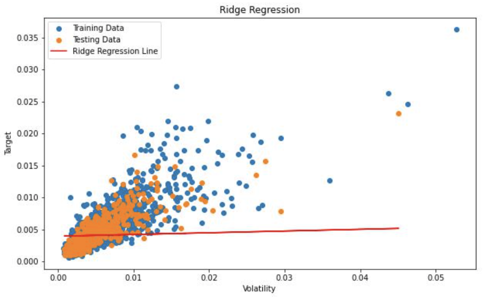
A change in the variance or volatility over time can cause problems when modeling time series with classical methods like ARIMA. The ARCH or Autoregressive Conditional Heteroskedasticity method provides a way to model a change in variance in a time series that is time dependent, such as increasing or decreasing volatility. An extension of this approach named GARCH or Generalized Autoregressive Conditional Heteroskedasticity allows the method to support changes in the time dependent volatility, such as increasing and decreasing volatility in the same series.
To determine if it’s appropriate to use the GARCH model to stock0, we conducted time series analysis for the log normal return by plotting it’s autocorrelation and partial autocorrelation shown as below.
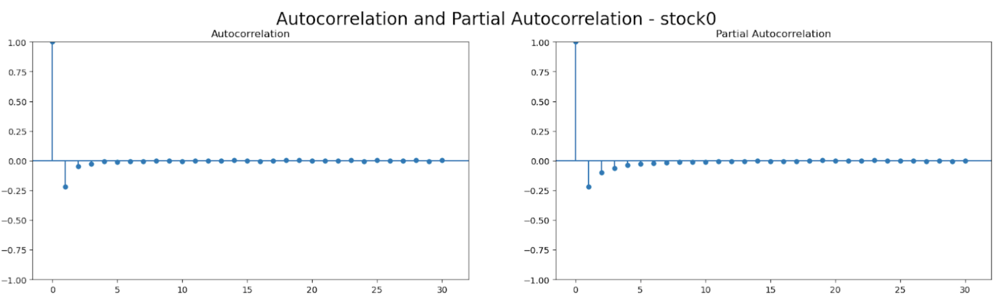
We can tell both the ACF and PACF for stock0’s log normal return will be close to 0 as the lag becomes bigger than 5, which means the time series variance doesn’t change much in time. So the GARCH model is not the best model to capture volatility prediction patterns here.
In summary, our study has highlighted the effectiveness of both supervised and unsupervised methods in volatility forecasting, leading to several significant insights. After evaluating various unsupervised machine learning models, we determined that the Random Forest approach exhibited the best fit, with an impressive R-squared value of over 70 percent with RMSE at 0.0013. The Ridge Regression approach closely followed, achieving an R-squared value of nearly 70 percent with RMSE at 0.001545 (converted from MSE of 0.000002389). In contrast to these two models, our use of Convolutional Neural Networks has shown less than 1 percent for its R-squared value with RMSE at 0.00253, demonstrating its poor outcome; we suspect that this could be due to the poor quality of the data. Second, among the supervised machine learning models, by leveraging a combination of Fourier and PCA methods, we were able to detect shift-invariant patterns while achieving dimensionality reduction. In the same models, we also found out that by using Gaussian Mixture Model to the PCA approach, the number of optimal components we have seen stands at 3. Third, by comparing with the baseline Time-Series model, particularly the GARCH approach, we have demonstrated the more reliability of the machine learning approaches. Within the GARCH approach, we have shown that there is not much difference in time variance series. Lastly, by being able to utilise a mixture of unsupervised and supervised models, we hope that our study can contribute to the existing studies on predicting stock volatility using machine learning models.
Moving forward, future studies could focus on addressing the limitations identified in our research. Firstly, studies could be conducted to understand why the Convolutional Neural Networks approach yielded a low R-squared value, possibly due to data quality issues. We hope that with a better dataset for CNN, more accurate results might be achieved. Secondly, within the unsupervised models, we hope that by conducting comparative studies with other dimensionality reduction techniques, the outcomes could provide valuable insights into selecting the most effective approach. Thirdly, expanding the comparison with various baseline time-series models could strengthen the argument for the reliability and superiority of machine learning approaches in volatility forecasting. Last, but not least, by using the same Optiver dataset, further studies could examine using other appropriate unsupervised and supervised methods.
Brownlees, C., Engle, R., & Kelly, B. 2011. A practical guide to volatility forecasting through calm and storm. In The Journal of Risk (Vol. 14, Issue 2, pp. 3–22). Infopro Digital Services Limited.
Engle, Robert F, 1982. "Autoregressive Conditional Heteroscedasticity with Estimates of the Variance of United Kingdom Inflation," Econometrica, Econometric Society, vol. 50(4), pages 987-1007.
Hull, J. 2017. Options, Futures and Other Derivatives. 10th Edition, New York: Pearson Education.
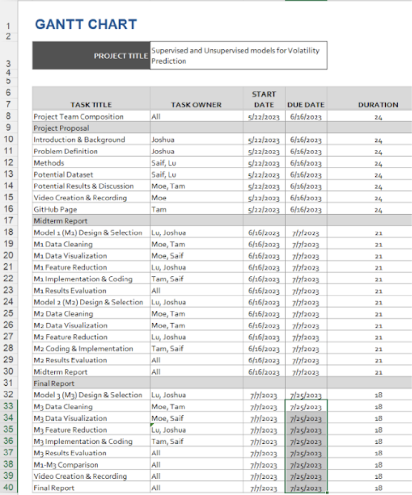
The term order book refers to an electronic list of buy and sell orders for a specific security or financial instrument organized by price level. An order book lists the number of shares being bid on or offered at each price point.
Below is a snapshot of an order book of a stock (let's call it stock A), as you can see, all intended buy orders are on the left side of the book displayed as "bid" while all intended sell orders are on the right side of the book displayed as "offer/ask"
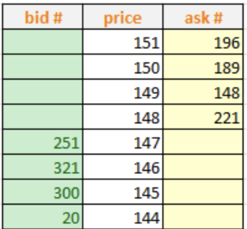
An actively traded financial instrument always has a dense order book (A liquid book). As the order book data is a continuous representation of market demand/supply it is always considered as the number one data source for market research.
An order book is a representation of trading intention on the market, however the market needs a buyer and seller at the same price to make the trade happen. Therefore, sometimes when someone wants to do a trade in a stock, they check the order book and find someone with counter-interest to trade with
For example, imagine you want to buy 20 shares of a stock A when you have the order book in the previous paragraph. Then you need to find some people who are willing to trade against you by selling 20 shares or more in total. You check the offer side of the book starting from the lowest price: there are 221 shares of selling interest on the level of 148. You can lift 20 shares for a price of 148 and guarantee your execution. This will be the resulting order book of stock A after your trade:
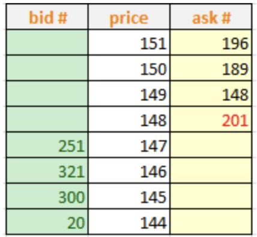
In this case, the seller(s) sold 20 shares and buyer bought 20 shares, the exchange will match the order between seller(s) and buyer and one trade message will be broadcast to public:
Similar to order book data, trade data is also extremely crucial to Optiver's data scientists, as it reflects how active the market is. Actually, some commonly seen technical signals of the financial market are derived from trade data directly, such as high-low or total traded volume.
book_[train/test].parquet: Provides order book data on the most competitive buy and sell orders entered into the market.
trade_[train/test].parquet Contains data on trades that actually executed.
train_csv: This csv file contains the ground truth values for the book and trade data.